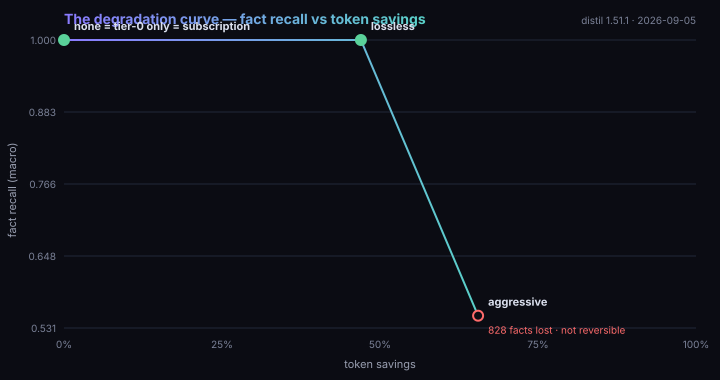
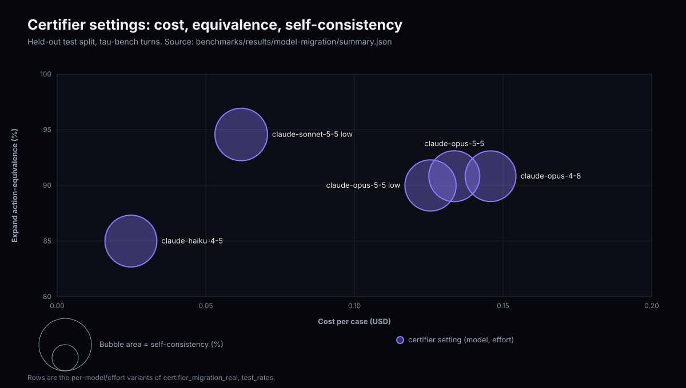
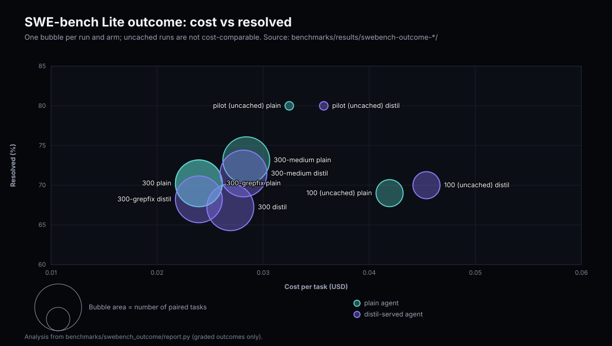

The Benchmark
Every compression method shrinks tokens — the only number that matters is how much it saves without changing what the agent decides, once prompt caching is priced in. This head-to-head runs every technique through the same decision-equivalence gate and the same cache-aware cost model: the winner is computed, not assumed.
claude-opus-4-8, Distil is certified at 83.2% token savings with a 0% decision-change rate (≤5% guaranteed at 95% confidence) — while running ~1,000× faster than the nearest tool. The real competitors, run live through the same gate on 2026-07-05, distil 1.10.1 vs llmlingua 0.2.2 and headroom-ai 0.27.0: LLMLingua-2 cuts 53% but flips 1-in-8 decisions (fails); Headroom 0.27.0 is decision-safe but only 40%. Headroom has moved since: re-run 2026-09-04 against headroom-ai 0.37.0, distil-causal takes 52.9% tokens / 58.7% dollars at 100% decision-equivalence (PASS) against Headroom’s 1.7% / 2.0% / 81% (FAIL) on the warm corpus gate, and on the read→edit→re-read codebench workload Headroom takes 35.6% tokens for +4.9% dollars. The “2.1× less aggressive” ratio is from 0.27.0 and does not survive the re-run. See the live head-to-head and full report.
Live head-to-head — real packages, real model
Not reference implementations: the actual installed packages (llmlingua 0.2.2, headroom-ai 0.27.0), each invoked the way that gives it its best fair result, all graded live by claude-opus-4-8 (majority-of-3) on the same realistic corpus (5 domains, 120 turns, 4.5–6.5 KB/turn). Savings are measured identically for everyone; the decision is the agent's actual next {action, target}.

| Method | Token savings | Live decision-change | Certifies ≤5%@95%? | Latency/turn |
|---|---|---|---|---|
| Distil (causal-prune + lossless) | 83.2% | 0.0% | ✔ certified — leader | 0.026 ms |
LLMLingua-2 (llmlingua, real) |
53.1% | 12.5% | ✘ fails gate | ~1,480 ms |
Headroom (headroom-ai, real) |
39.7% | 0.0% | ✔ certified | 26 ms |
Live, claude-opus-4-8, majority-of-3, n=120, α=0.05/δ=0.05. Distil is the only method that is simultaneously the most aggressive, fully decision-equivalent, and lowest-latency. Headroom 0.27.0 is genuinely decision-safe here (it preserved the exact target ID every turn) but 2.1× less aggressive and loads a ModernBERT scorer — both facts are specific to 0.27.0 and to this 2026-07-05 run; see the 2026-09-04 re-run against headroom-ai 0.37.0. LLMLingua-2 is aggressive but decision-unaware — it drops/garbles the load-bearing ID on 1-in-8 turns, so the gate disqualifies it. Reproduce: python benchmarks/derc_live_compare.py; raw output of the 2026-07-05 run is committed at docs/paper/results/. Full methodology & caveats →
rtk-py) is a command-output proxy — it compresses the output of specific wrapped commands (git, ls, psql, aws…) by stripping known boilerplate, and exposes no raw-text/stdin mode. It physically cannot compress arbitrary agent context, so it's a different layer of the stack, not a contender on this axis. We attempted it for real; the adapter reports the mismatch rather than fabricating a number.
The certified frontier (live)
Every level of Distil's compression ladder, graded live — and the cliff where blind compression falls off it:
ladder level decision-change savings certifies @ ≤5%/95% -------------------------------------------------------------------- byte-exact 0.0% 2.6% ✔ yes lossless (tier-0/1) 0.0% 47.9% ✔ yes causal-prune 0.0% 83.2% ✔ yes prune + lossless 0.0% 83.2% ✔ yes ← operating point truncate@400 (blind) 0.0% 61.6% ✔ yes truncate@200 (blind) 100.0% 73.9% ✘ no — drops the directive -------------------------------------------------------------------- byte-exact = 0% confirms decisions are DETERMINED by context (the test is valid); blind truncate@200 cuts more raw tokens than lossless yet flips EVERY decision. It's not how many tokens you cut — it's which ones.
How we certified — and why it's credible
Decision-equivalence, not bytes
Per turn, the loss is 1 iff the agent's {action, target} flips versus the uncompressed context — graded by the same live model, majority-of-3 to strip the model's own run-to-run noise. We certify the decision, not a string diff.
Determinism, verified
byte-exact = 0% proves the decision is determined by context — so any change at higher compression is the compressor's fault, not model ambiguity. (Our first corpus failed this honestly at ~50%; we fixed the corpus, not the math.)
Distribution-free, finite-sample
Learn-Then-Test with Hoeffding–Bentkus p-values gives P(R(λ̂) ≤ α) ≥ 1−δ — no distributional assumptions, valid at finite n (arXiv:2110.01052 / 2208.02814). hb_p = 0.0058 < δ: certified with margin.
Built to be falsified
Every level shown (no cherry-pick); the certificate refuses when data is thin (honest conservatism); competitors run the same gate; fully reproducible with pinned versions. Caveats stated plainly: decision-determined synthetic corpus, exchangeability, marginal-not-per-prompt.
Coding-agent benchmark — cache-delta on read→edit→reread
A second, messages-level benchmark targets the coding-agent hot path (benchmarks/codebench.py: 20 sessions / 320 turns of read → edit → re-read, re-run 2026-09-04), scoring cache-aware real dollars against the real installed packages: headroom-ai 0.37.0 ([ml,code] extras), llmlingua 0.2.2, distil 1.51.1. Each method is a pure, deterministic, cache-monotonic function of the cumulative conversation — the same standard distil holds itself to. Raw output committed at benchmarks/results/2026-09-04/.
| method | token savings | $ savings (cache-aware) | latency / turn | fidelity |
|---|---|---|---|---|
LLMLingua-2 (llmlingua 0.2.2, real) | 56.7% | 57.2% | 173.7 ms | lossy |
| distil-verbatim + cache-delta | 42.7% | 46.3% | 58.2 ms | reversible |
| distil + cache-delta | 34.9% | 43.8% | 59.4 ms | reversible |
Headroom (headroom-ai 0.37.0, real, default) | 35.6% | 4.9% | 6.9 ms | lossy |
| distil-verbatim (Tier-0 only) | 18.5% | 3.7% | 0.5 ms | reversible |
| distil (PAYG digest) | 0.0%* | 0.0%* | 1.0 ms | reversible |
*By design, not a regression: this workload is read → edit → re-read, and once the agent has quoted a Read/Grep/Glob result byte-exact, that provenance is exempted from digest for the rest of the session — the exact-quote guarantee an Edit depends on. See the 1.49.0 changelog entry. Headroom's ms/turn above pays a one-time ModernBERT weight-load cost on this process's first invocation; a warm re-run (same token/$ percentages — see codebench-warm-headroom-2026-09-04.out) measures 2.2 ms/turn. distil has no model weights to load, so its own numbers don't move cold or warm.
Edit needs, at the cost of the digest's savings on a workload that is nothing but re-reads. LLMLingua-2 still posts the highest raw compression (56.7% tokens, 57.2% dollars) — we don't hide it — but it's lossy and, even with the digest now doing far less work here, ~175× slower than it. Headroom's own number is a real improvement over its June 2026-06-23 run below: token savings flipped from a net cost increase to a net decrease (4.9% cheaper) on a newer, non-ML code path — though its default read-lifecycle compression still leaves it well behind cache-delta's reversible 43.8%. Reproduce: PYTHONPATH=. python benchmarks/codebench.py 20.
Historical: the 2026-06-23 measurement
Kept for context, not current — superseded by the 2026-09-04 run above (newer package versions, a larger sample, and the 1.49.0 provenance-exemption fix that changes what the bare digest row even measures). This table ran against headroom-ai 0.27.0 with 16 sessions / 256 turns.
| method | token savings | $ savings (cache-aware) | latency / turn | fidelity |
|---|---|---|---|---|
| distil (PAYG digest) | 91.5% | 91.1% | 0.08 ms | reversible |
| distil + cache-delta | 89.6% | 89.0% | 12.9 ms | reversible |
LLMLingua-2 (llmlingua 0.2.2, real) | 56.8% | 57.2% | 274 ms | lossy |
| distil-verbatim + cache-delta | 34.9% | 43.8% | 13.8 ms | reversible |
| distil-verbatim (Tier-0 only) | 0.0% | 0.0% | 0.6 ms | reversible |
Headroom (headroom-ai 0.27.0, real, default) | 22.4% | −16.8% | 5.3 ms | lossy |
Honest reading at the time: the Tier-1 reversible digest was the dominant lever (~91% cache-aware, reversible, 0.08 ms) — it already captured the re-reads, so cache-delta added little on top of it. LLMLingua-2 was genuinely strong on savings (57.2%) but lossy and ~3,400× slower. Headroom reduced tokens 22.4% yet cost 16.8% more, busting the prompt cache with its default read-lifecycle compression. This benchmark also caught two real distil bugs (a cache-monotonicity flip and a Tier-0 token inflation) — both fixed in v0.22.0; the numbers above are post-fix.
The distil benchmark corpus, warm — same 2026-09-04 re-run
The deterministic corpus gate (9 domains, no API key) run against the same package versions. A cold process shows Headroom skipping compression entirely — its Kompress model is still loading — which trivially "passes" the decision-equivalence check on requests it never touched; the table below is the warm re-run, after Kompress finished loading.
| technique | tokens saved | $ saved | decision-equiv | gate |
|---|---|---|---|---|
| distil-causal | 52.9% | 58.7% | 100% | ✔ PASS |
Headroom (headroom-ai 0.37.0, real, warm) | 1.7% | 2.0% | 81% | ✘ FAIL |
Cold-process artifact, for the record: the same run before Kompress finishes loading shows Headroom at a misleading 0.0% tokens / 100% "PASS" — it fails open while loading and passes through every request untouched, which trivially agrees with the ungated baseline. Preload before comparing. Raw output: benchmarks/results/2026-09-04/.
The offline standings — deterministic runner, zero API key
The companion to the live head-to-head above: the same gate run by the deterministic (structural) runner on a broader 64-trajectory corpus — fully reproducible by anyone, no key required. Ranked by cache-aware dollar savings (see methodology below). Certified means the method passed a statistical non-inferiority test and preserved 100% of decisions; anything less is disqualified, however much it saved. Want to test a specific tool? Register it through the reproducible --external seam and it's measured on the identical axes.
| Technique | Family | Tokens saved | $ saved | Decision equiv. | Verdict | Fidelity |
|---|---|---|---|---|---|---|
| distil-causal | cache-aware + causal pruning | 80.5% | 81.5% | 100% | ✔ certified · leader | lossy* |
| truncate-tail (structural baseline) | sliding-window / truncation | 78.7% | 79.6% | 14% | ✘ fails gate | lossy |
| distil-stream | lossless + cross-turn dedup (fully reversible) | 61.0% | 61.7% | 100% | ✔ certified | reversible |
| distil-lossless | cache-aware lossless + structured fold + template mining | 57.4% | 58.1% | 100% | ✔ certified | byte-exact |
| summarize (structural baseline) | abstractive / rolling summary | 56.5% | 57.2% | 39% | ✘ fails gate | lossy |
| LLMLingua-2 (real pkg) | llmlingua 0.2.2, per tool-result |
54.9% | 54.8% | 0% | ✘ fails gate | lossy |
| Headroom (real pkg) | headroom-ai 0.27.0, whole-conversation optimize=True |
43.5% | 44.0% | 61% | ✘ fails gate | lossy |
| extractive-prune (structural baseline) | extractive importance (LLMLingua technique family) | 18.2% | 18.4% | 77% | ✘ fails gate | lossy |
| minify-all | lossless minification | 0.1% | 0.1% | 100% | ✔ certified | byte-exact |
*distil-causal drops context that ablation proves never changed a decision — not byte-reversible, but certified decision-equivalent. The three Distil operating points are all certified at 100%: distil-lossless (byte-exact: structured fold + template mining), distil-stream (adds cross-turn dedup of recurring tool output the cache can't reach — fully recoverable), and distil-causal (adds causal pruning). The lossy families are faithful reference implementations; bring your own tool with --external to add it to the table. Numbers: claude-opus-4-8 pricing, deterministic runner. Reproduce below. Unaudited: this run predates the claims gate and its raw output was not committed, so these figures are not tied to an artifact; treat them as indicative until re-run.
The corpus
To avoid any one tool's home-turf advantage, the comparison runs on 64 reproducible trajectories across 8 families deliberately spanning both regimes: structured/repetitive data (JSON record arrays, SQL rows, metrics, logs) where structural compaction pays off, and diagnostic/prose content (Kubernetes incidents, stack traces, RAG chunks, support transcripts) that conservative crushers protect and lossy methods mangle. Decisions are buried inside large tool outputs — as on real agents — so naive head/tail truncation drops them (14% equivalence). A large reference doc is re-read every turn (the recurring tool output prompt caching can't reach), which Distil's cross-turn dedup collapses and others re-bill in full.
Why this is the honest comparison
No method is special-cased
Every technique — including Distil's own — is scored by the identical decision-equivalence + non-inferiority gate and the identical cache-aware cost model. The harness will happily rank a competitor above Distil if it earns it. It doesn't, because no other family combines lossless, cache-stability, causal pruning, and certification — but the door is open.
Best-form, not strawmen
The baselines are faithful reference implementations of the real technique families — sliding-window truncation, extractive importance pruning (the LLMLingua / Selective-Context lineage), abstractive summarization, naive minification — each in its best reasonable form. They genuinely remove tokens. They just can't prove they kept the decision.
Two ways to "win" that don't count
A method can post a big raw token cut yet flip decisions — summarize cuts 56% but keeps only 39%; truncation cuts 79% but keeps 14%; extractive importance cuts 18% but keeps 77%. All disqualified. Or a method can shave tokens yet bust the prompt cache and cost more in real dollars. The benchmark prices both, so neither illusion survives.
Plug in a real tool
Don't trust our reference baselines? Register any installed compressor through the --external seam and it's measured on the identical axes. The claim "Distil leads on certified savings" is reproducible — and falsifiable. That's the point.
The equivalence dial
100% decision-equivalence is the default — but it's a setting, not a wall. Some teams will trade a little equivalence for deeper savings. Distil makes that trade explicit and bounded instead of hidden: you set a target, and the compressor spends a divergence budget — floor((1−target) × turns) turns — on the highest-value turns first, falling back to byte-exact everywhere else. You always know exactly what you traded.
$ distil frontier --corpus benchmarks/corpus_xl
savings-vs-equivalence dial (runner=deterministic)
target achieved equiv token savings curve
----------------------------------------------------------------------
100% 100% 58.1% ████████████████
95% 100% 58.1% ████████████████
90% 100% 58.1% ████████████████
80% 82% 62.9% ██████████████████
----------------------------------------------------------------------
At 100% you get the certified-safe result. Relax the target and the budget is
spent on the highest-value turns — deeper savings, a known equivalence cost.
Honest notes: the dial's resolution is bounded by session length — on 5-turn trajectories the budget steps in 20% increments, so 95% and 90% round to the certified-safe point; longer sessions dial finer. The extra savings are real but modest (a principled risk knob, not a magic unlock), and the trade is always reported, never silent. Grade the frontier against the live model with --runner anthropic.
Reproduce it
# the bundled 8-domain standings, offline, zero API key distil benchmark # the 64-trajectory varied corpus above (from a repo clone) python benchmarks/gen_corpus.py distil benchmark --corpus benchmarks/corpus_xl --html standings.html # verify against a REAL external compressor (list[str] -> list[str] over block texts) distil benchmark --external mypkg.compressor:compress:MyTool # grade with the live model instead of the deterministic runner distil benchmark --runner anthropic --tokenizer anthropic
benchmarks/gen_corpus.py. ~80% is near the certified ceiling for this corpus: beyond it you start dropping decisions, and no honest tool can exceed that without lying — which is exactly what every disqualified row tried to do. For task-accuracy on a public benchmark (τ-bench, SWE-bench, GSM8K), ingest its traces into a corpus and run with --runner anthropic: the same comparison, graded by the live model. The harness is the deliverable; the corpus is swappable.
Live-model validation — on your own traffic
The live head-to-head above used our determined corpus. The same harness grades your traffic with no new code: every technique's compressed context judged by the real model, on real benchmark trajectories. The path is three commands:
# 1) record a public benchmark's agent trajectories as API requests (jsonl), # then convert them into a Distil corpus distil ingest --input taubench_traces.jsonl --out corpus_taubench # 2) run the SAME standings, but decisions graded by the live model # and tokens counted billing-grade export ANTHROPIC_API_KEY=sk-ant-… distil benchmark --corpus corpus_taubench --runner anthropic --tokenizer anthropic # 3) the certified leaders now carry a live-model decision-equivalence verdict
What this buys: the equiv column becomes "did the live model make the same decision on the compressed context," graded on τ-bench / SWE-bench / GSM8K episodes instead of the synthetic corpus. The non-inferiority gate, the cost model, and the technique set are unchanged — only the judge and the data get more real.
byte-exact = 0% proves the model reproduces its own decision on identical context), Distil's causal-prune + lossless certifies 83.2% savings at a 0% live decision-change rate (2026-07-05, distil 1.10.1 vs llmlingua 0.2.2 and headroom-ai 0.27.0) — the aggressive operating point does hold when the decision is actually determined by the context, and the real competitor packages run through the very same live gate.
The degradation curve — what each rung costs
Everything above answers a yes/no question: is the shipped strategy non-inferior? That is the right question for a gate and the wrong one for a decision, because it says nothing about the shape of the tradeoff on either side of the operating point. This is that shape, measured over the offline corpus with distil bench --curve. No API calls, no model, no cost — so it runs per-commit rather than once a quarter.

| Rung | Savings | Recall | Visible | Facts lost | Reversible |
|---|---|---|---|---|---|
none | 0.0% | 1.000 | 1.000 | 0 | yes |
tier-0 only | 0.0% | 1.000 | 1.000 | 0 | yes |
subscription | 0.0% | 1.000 | 1.000 | 0 | yes |
lossless | 47.0% | 1.000 | 0.769 | 0 | yes |
aggressive | 65.5% | 0.551 | 0.551 | 828 | no |
Distil 1.51.1, 9-trajectory corpus, generated 2026-09-06. Recall is the macro average across domains, counting facts that are recoverable through an expand handle; visible counts only facts still readable in the forwarded text. subscription is the lossless-only path driven through the adapter's real verbatim branch, not a reconstruction of it. Every rung carries production's reject-if-bigger guard, so no rung can report savings the proxy would not take. Regenerate with distil bench --curve.
Three things the curve says that the gate cannot
- The digest is where the savings live, and it costs no facts.
losslessremoves 47% of tokens while total recall stays at 1.000. Its visible recall drops to 0.769, which is the mechanism made legible: roughly a quarter of the facts moved behind a recovery handle rather than being deleted. That gap is Tier-1, drawn to scale. - Lossless-only saves nothing on this corpus — and that is the real path, not a proxy for it.
subscriptionruns the adapter's own verbatim branch, structured folds included, and still measures 0.0%: those folds need tabular or templated output, and this corpus is prose logs. It sits exactly ontier-0 only. This reproduces what the live 4-arm A/B found on real traffic, and it is the honest answer to "can I get the savings without the digest?" — on this shape of content, no. - The curve bends exactly once.
aggressivebuys 18 more points of savings and pays 828 facts for them, irrecoverably, because it issues no handle. That is the clifftarget_equivalence = 1.0exists to stay away from, and the reason the dial's default never reaches this rung.
The results JSON is written to benchmarks/results/curve.json and the chart to docs/assets/curve.svg, both stamped with the version and date they were generated from. tests/test_curve.py asserts the shape rather than the pixels: reversible rungs must hold full recall, and the lossy rung must save more while losing facts. If the ladder ever changes shape, that test fails before this page goes stale.
Reproduce in CI
Reproduce the Numbers
Every headline number has a command. This page shows exactly how each one is produced — what is synthetic, what is live, and what we ran but chose not to ship as the default (E7). None of it requires you to trust our word; it requires you to run the script.
distil bench (offline decision-equivalence), distil verify (byte-fidelity), and distil validate (adversarial real-path). Real-model grading uses benchmarks/prove.py. The head-to-head comparison is benchmarks/derc_live_compare.py. A cross-compressor invariant scorecard is python benchmarks/scorecard.py. Full methodology in docs/EVALUATION.md.
The three CI gates
Every push to main must pass all three gates before merging. They run in ~2 min combined, no API key.
Gate 1 — distil bench (offline decision-equivalence)
Runs the bundled 8-domain trajectory corpus through the decision-equivalence gate using the deterministic (structural) runner. The gate certifies that compression does not change the agent’s next action on any trajectory. This is the primary correctness gate.
# reproduce exactly — no key, no internet, ~5 s distil bench # or against the full 64-trajectory varied corpus (requires a clone) python benchmarks/gen_corpus.py # writes benchmarks/corpus_xl/ (seeded, deterministic) distil bench --corpus benchmarks/corpus_xl
The deterministic runner is a structural stand-in: it checks whether the “decision-bearing” token sequence survives (not a live model call). This makes it reproducible by anyone in ~5 seconds. It is not a substitute for real-model grading — see Gate 3 and prove.py below for that.
Gate 2 — distil verify (byte-fidelity)
Checks that every Tier-0 and Tier-1 operation in the corpus is byte-reversible: compression followed by decompression returns the exact input bytes, and frozen history never mutates between turns. A failure here means a lossless claim is false.
# verify byte-fidelity across the bundled corpus distil verify # against a custom corpus distil verify --corpus benchmarks/corpus_xl
Gate 3 — distil validate (adversarial real-path)
Drives the actual compression + proxy path against 12 hostile inputs (huge log blocks, unicode surrogates, deeply nested JSON, handle-injection strings, secret-looking content, malformed/None tool results, empty blocks) and asserts five load-bearing invariants on each:
| Invariant | What it checks |
|---|---|
| reversibility | Every digest handle recovers its exact original bytes from the local RestoreStore. |
| reject-if-bigger | A compressed block is never larger than its original (plus a 64-byte slack for stub metadata). |
| recency-exact | The most-recent tool result — the agent’s freshest output — is byte-identical after compression. |
| fail-open | No input, however hostile, makes the compressor raise an exception or the proxy return 5xx. |
| content-free | After a run, no prompt/response/tool text appears in any on-disk telemetry file (only hashes, sizes, counts). |
12 cases × 5 invariants = 60 checks. All 60 must pass.
# run the adversarial gate
distil validate
Source: distil/harness.py. The gate is separate from distil verify (corpus byte-fidelity) and distil bench (non-inferiority): it exercises the code paths a corpus never hits — hostile inputs, streaming, marker injection.
Real-model grading — prove.py
benchmarks/prove.py removes the circularity of the deterministic runner by grading real agent traces with a real model. It runs four experiments (E1–E4) against actual trajectories:
| Experiment | What it measures |
|---|---|
| E1 Frontier | Token savings vs. decision-change rate per compression level. |
| E2 Certification coverage | Certify at α on a calibration split, then measure the realized decision-change rate on a disjoint held-out split over many random splits. The certificate is sound iff empirical P(realized ≤ α) ≥ 1−δ. |
| E3 Distribution shift | Leave-one-domain-out: calibrate on all domains but one, test on the held-out domain (the exchangeability stress test). |
| E4 Downstream task success | Converts per-turn equivalence into actual outcome: a trajectory keeps its result iff every decision is unchanged. Requires outcome labels (τ-bench reward / SWE-bench resolved). |
Four grading backends are supported:
--runner | What it uses | When |
|---|---|---|
smoke | Offline heuristic — non-evidential | Plumbing / CI, no key. Not evidence about real agents. |
claude-cli | The claude -p CLI — your Claude Code subscription | No API key needed if you already use Claude Code. |
openai | Any OpenAI-compatible endpoint (vLLM / Ollama / LM Studio) | Free at scale with a local open model. |
anthropic | The Anthropic API (ANTHROPIC_API_KEY) | Billing-grade reference for published numbers. |
# offline plumbing check only — no key, no download python benchmarks/fixtures/make_fixtures.py python benchmarks/prove.py --dataset fixtures --runner smoke --alpha 0.2 # real-model grading via your Claude Code subscription (no API key) python benchmarks/prove.py --dataset tau --path runs.json \ --runner claude-cli --model claude-haiku-4-5-20251001 --samples 3 # local open model via vLLM (zero per-call cost) # vllm serve meta-llama/Llama-3.1-8B-Instruct --port 8000 python benchmarks/prove.py --dataset swe --path swe_trajs/ \ --runner openai --base-url http://localhost:8000/v1 \ --model meta-llama/Llama-3.1-8B-Instruct
The smoke runner is a non-evidential stand-in for plumbing checks. It is not evidence about real agents. See benchmarks/PROVE.md for the full runner table and what each backend actually proves.
The head-to-head corpus
The head-to-head runs on 64 trajectories across 8 families, generated deterministically with a fixed seed so the numbers reproduce exactly. The corpus spans both regimes deliberately so no tool gets a home-turf advantage:
- Structured / repetitive: JSON record arrays, SQL rows, metrics logs — where structural compaction pays off.
- Diagnostic / prose: Kubernetes incidents, stack traces, RAG chunks, support transcripts — where conservative tools protect content and lossy methods mangle it.
Decisions are buried inside large tool outputs, as in real agents, so naive head/tail truncation drops them. A large reference document is re-read every turn (the recurring tool output prompt caching can’t reach), which distil’s cross-turn dedup collapses.
# generate the corpus (idempotent, seeded at 42) python benchmarks/gen_corpus.py # writes benchmarks/corpus_xl/ # run the head-to-head — distil + structural baselines, deterministic runner distil bench --corpus benchmarks/corpus_xl # add a real external compressor (list[str] -> list[str] over block texts) PYTHONPATH=. distil bench --corpus benchmarks/corpus_xl \ --external benchmarks.headroom_adapter:compress:Headroom # live model grading export ANTHROPIC_API_KEY=sk-ant-... distil bench --corpus benchmarks/corpus_xl --runner anthropic --tokenizer anthropic
The full live head-to-head (distil vs. llmlingua 0.2.2 vs. headroom-ai 0.27.0, graded by claude-opus-4-8 majority-of-3) ran on 2026-07-05 and its raw output is committed at docs/paper/results/derc_live_compare.2026-07-05.log. Reproduce it:
pip install headroom-ai llmlingua python benchmarks/derc_live_compare.py
The invariant scorecard
The same five invariants distil enforces on itself (distil validate) can be run against any compressor adapter. benchmarks/scorecard.py does this and produces a side-by-side table. It runs offline with no extra installs; headroom and llmlingua columns appear automatically if the packages are installed.
python benchmarks/scorecard.py # prints table, writes benchmarks/scorecard.json
What the current run produces (distil + structural baselines; external adapters skipped when not installed):
distil truncate@500 recency-w@500 keep-last-3 recomp-extr sel-context ---------------- ------ ------------ ------------- ----------- ----------- ----------- reversibility PASS FAIL FAIL PASS FAIL FAIL reject-if-bigger PASS PASS PASS PASS PASS PASS recency-exact PASS PASS PASS PASS PASS FAIL fail-open PASS PASS PASS PASS PASS PASS content-free PASS n/a n/a n/a n/a n/a
Fairness semantics used per cell:
- reversibility — Behavioral: does the compressor provide a recovery path? Distil stores originals in a local RestoreStore keyed by 8-hex handles embedded in the output; the harness confirms every handle recovers its exact bytes. Structural baselines are observably irrecoverable (truncated bytes are gone) → FAIL.
keep-last-3-turnstargets HISTORY blocks, not TOOL_OUTPUT; it is a no-op on the tool-result content used here → trivially PASS (no bytes changed). - content-free — Architectural: the invariant tests whether on-disk telemetry holds zero prompt/tool text. Structural baselines and library-only adapters have no on-disk state at all; the invariant is inapplicable, not failing →
n/a. This follows the rule: grade observable behavior only; an invariant a compressor never claimed (because it has no telemetry to check) is not scored as FAIL. - sel-context recency-exact FAIL — Honest finding: the selective-context token-level pruner drops the recency sentinel when scoring salient tokens. This is the exact failure mode distil’s recency carve-out exists to prevent.
The negative result: E7
E7 is an internal SWE-bench Verified end-to-end experiment (benchmarks/swe_bench_e2e/) that ran the full agent loop — not a single-step proxy — under distil’s aggressive lossy compression tier. The result: 52% → 16% task resolution. The reversible tier held (56% vs. 52% full-context baseline). Per-step decision-equivalence had passed; end-to-end task success still cratered under the aggressive tier.
We publish E7 as evidence, not confession. It is the concrete reason the shipped default is the conservative/reversible tier rather than the tier that scores best on a raw compression-ratio leaderboard. The trajectory-risk certificate and the fail-safe gate exist because of E7.
# E7 harness (requires SWE-bench Verified setup)
bash benchmarks/swe_bench_e2e/run_all_agents.sh
bash benchmarks/swe_bench_e2e/run_all_scores.sh
python benchmarks/swe_bench_e2e/aggregate.py
Full methodology, the A/A nondeterminism baseline, trajectory-risk certificates, and what distil’s numbers do and don’t prove: docs/EVALUATION.md.
Synthetic vs. live: what each number actually is
| Number | How produced | What it proves | What it doesn’t |
|---|---|---|---|
| 83.2% savings / 0% decision-change (synthetic 120-turn corpus, live-graded head-to-head, 2026-07-05, distil 1.10.1 vs llmlingua 0.2.2 and headroom-ai 0.27.0) | Real packages, real model (claude-opus-4-8 majority-of-3), 120-turn corpus |
On this corpus, distil preserves agent decisions at that compression level | End-to-end task success on a different workload; E7 is the cautionary data point |
| 80.5% certified savings (offline standings) | Deterministic structural runner, 64-trajectory varied corpus | Decision-bearing token sequences survive at this compression level, reproducible by anyone | Live model agreement; uses a proxy for the model’s decision, not the real model |
| 60/60 validate checks | Real compression path, 12 adversarial inputs, 5 invariants | The five guarantee properties hold on hostile inputs distil’s unit suite never exercises | Compression ratio; orthogonal to the savings numbers |
| SWE-bench Lite: −2.0 / −1.7 pts, cost-neutral (shipped path, n=300, two runs) | Plain vs distil-served Claude agent on all 300 tasks, official grader, prompt caching on both arms | The shipped path is within about 2 points on task success and does not cost more on these tasks | Non-inferiority at the 5-point margin (not shown); long sessions (not measured); research configurations (E8–E14) say nothing about the shipped path |
| E7: 52% → 16% (aggressive tier) | Same SWE-bench Verified setup, aggressive lossy tier | Aggressive compression with a passing per-step certificate still cratered end-to-end | Anything about the reversible / gated tier: that one held at 56% |
Independent validation
What an outside benchmark found
In August 2026 an engineer ran distil against bare Claude Code across 75 agent sessions and measured the result from the API’s own usage fields rather than from any tool’s dashboard. One distil configuration finished 6 of 15 coding tasks where bare Claude Code finished 13. This page is what they found, why it happened, and what changed in 1.49.0.
We publish it for the same reason we publish the bugs our own evaluation harness had: a compressor whose public record contains no failures is not a compressor that never failed, it is one that never looked. The measurement that matters is the one taken by someone with no stake in the answer.
The result
| Arm | Tasks completed | Cache writes vs baseline |
|---|---|---|
| bare Claude Code (baseline) | 13 / 15 | 1.00× |
| distil hook mode | 12 / 15 | 0.94× |
| distil proxy, default (subscription) | 12 / 15 | 1.56× |
distil wrap --expand | 6 / 15 | 0.87× |
Cache writes are the number that decides cost on a cached workload,
and they are taken from cache_creation in the provider’s response —
not from distil’s own accounting, which is the thing under test.
The failure that mattered
Seven --expand runs ended with an empty diff: the agent ran for
18, 22, even 51 turns, wrote nothing to disk, and reported success. On the long
refactor it did this all three times — and the repository’s 1,371 existing
tests still passed, because nothing had been modified. A benchmark that graded
on “did the suite stay green” would have scored those runs as wins.
No other arm produced a single empty diff in 60 runs.
Cause 1 — the agent never ran its own tool call
Claude Code emits parallel tool calls, so one assistant message routinely carries
both an Edit and a distil_expand. distil’s recovery loop
assumed distil_expand was the only tool call in the turn. It answered just
that block and re-queried — which left the client’s Edit as an
unanswered tool_use upstream, and let the continuation’s
stop_reason: end_turn replace the turn’s real tool_use.
Claude Code executes tools only when stop_reason == "tool_use". So it
received the Edit, ran nothing, printed the continuation’s
“all done”, and finished. Fixed: a turn carrying a client tool call
is now terminal — relayed verbatim, stop_reason intact, no re-query.
Cause 2 — a failed recovery truncated the stream
When the re-query failed, the connection closed with no message_delta
and no message_stop. A terminator-less SSE message is truncated,
not finished, so the SDK retries it invisibly: wall-clock burned, no progress, and no
error the user can see. That is the benchmark’s 808-second, zero-write signature.
Fixed: every exit emits a terminator.
Cause 3 — a file read could be digested before it was edited
Recency is positional, so a file read three turns ago was eligible for digesting.
But the agent must still reproduce that text character-for-character in an
Edit(old_string=…). Once the read is a digest, no exact match
exists. Fixed: the exemption is now keyed on provenance — results
answering Read/Grep/Glob and their MCP equivalents stay byte-exact at any age. Logs
and test output still compress normally.
Compression that saved nothing still cost cache
On a subscription distil stays lossless-only by design and correctly reported 0.0% savings — while still writing 1.56× the baseline’s cache-creation tokens, and 2.52× on a short session. Doing nothing to the content is not the same as doing nothing to the cache.
Two causes, both fixed. The distil_expand tool was injected only once
a recoverable handle existed, so the tools array — which Anthropic caches
ahead of the system prompt and all history — changed shape on the turn
compression first fired. And an unmodified request body was re-serialized rather than
forwarded byte-for-byte; json.dumps is not a byte-faithful round-trip, so
the prefix moved even when nothing had been compressed.
Worse, distil’s own drift report sent users hunting in the wrong place: it blamed “a tool list whose order varies” upstream, while distil’s tool list was the one varying. It now names distil’s own causes first.
The mode that won had nothing to show for it
Hook mode was the strongest distil arm measured — 12/15 tasks, 0.94× baseline cache writes, the highest cache-hit rate of any configuration — and the only one that wrote no ledger at all. Its effect was visible solely in the provider’s billing, which is an awkward position for a product whose claim is that it proves its numbers instead of asking to be trusted.
It now writes a content-free receipt per compressed result:
distil hook --install # documented Claude Code extension point
distil hook --stats # what it actually savedWhat this does not establish
The benchmark’s own caveat is worth repeating: an empty diff proves the agent
stopped early, not that compression caused it. The runs used --shadow 0.0
to conserve tokens, so distil’s decision-equivalence sampler — the tool
built for exactly this question — captured nothing. We have since reproduced the
mechanism locally, without API spend, and pinned it with regression tests that fail
without their fixes. But the association came first and the proof came second, which
is the right order to admit to.
The lesson we are keeping: a green test suite does not prove the work was done. Acceptance has to check that the required change exists, not merely that nothing broke.
Related: the bugs our own harness had · negative results · why removing tokens can cost more · what “savings” means on a flat-rate plan
Evaluation
Every compressor asks you to trust it. This page is what distil measures instead — including the numbers that make distil look worse, because a suite that only ever produces good news is a suite nobody should believe.
Why compression ratio is not a result
Token reduction and task success are not linearly related, and the relationship can cliff-edge. One study found 4× compression collapsing SWE-bench resolution from 86% to 7% — not a decline, a cliff.
We hit it ourselves. E7 ran the full SWE-bench Verified agent loop under distil's aggressive tier and measured real resolution: 52% → 16%. The reversible tier held (56% vs 52% full-context). Per-step decision-equivalence had already passed. End-to-end task success still cratered.
We publish E7 as evidence, not confession. It is why the shipped default is the conservative tier rather than the one that wins a compression-ratio leaderboard.
The rule that follows: every compression claim reports token savings and a task-success delta together, at the setting we actually ship. A ratio with no success number beside it is an invitation to find the cliff in production.
Five layers, five different questions
| Layer | Question | Command | Cost |
|---|---|---|---|
| Decision equivalence | Does the agent's next action change? | distil bench | free |
| Byte fidelity | Is every compression exactly reversible? | distil verify | free |
| Fact recall | Which facts stay visible, recoverable, lost? | distil retention | free |
| State fidelity | Does a yes on recall actually mean anything? | distil fidelity | free |
| Adversarial | Do the invariants hold on hostile input? | distil validate | free |
All five are offline, need no API key, and run in seconds. That is deliberate: a gate you skip because it costs money is not a gate. All five run per-commit in CI.
The case recall cannot see

Recall asks "is the fact still there". Here is a trajectory where the answer is yes and the agent is still broken:
turn 2 Write(file_path="net/scratch_bench.py") turn 4 rm net/scratch_bench.py
Compress away turn 4. Every path token is still present — string recall reads 100% — while the agent now believes a file exists that does not, and will plan around it. Nothing in the transcript says otherwise.
distil fidelity folds tool calls into a file-state ledger and grades the final state, splitting two outcomes that presence metrics conflate:
| Outcome | Meaning | Severity |
|---|---|---|
exact | final state preserved | — |
lost | path absent | loud — the agent can see the gap |
stale | path present, wrong state | silent — the agent acts on a false belief |
These are never averaged into one accuracy figure, because a compressor that drops a whole file history is safer than one that preserves half of it. On the case above: string recall 100%, state fidelity 0%.
Factory.ai measured every method they tested at 2.19–2.45 / 5.0 on this axis across 36,611 production engineering messages. Presence-based metrics are structurally unable to detect it — the string is present.
Three more things recall misses
Overclaim. "approximately 4200 ms" → "4200 ms". Byte-identical value, and every recall metric scores it perfect — but the agent has been handed a precision the source never asserted. The hedge was the information. Hedges are grouped into classes so reshaping (approximately → about) is not penalised; only the disappearance of hedging is. Direction is asymmetric: overclaim is gated, underclaim only reported.
Continuation. Whether the agent still knows what is left to do. Dropping a completed item is cheap — work gets redone. Dropping a pending one is silent: the work is skipped and success is reported anyway.
Propagation. Whether a loss at turn k shows up as a behaviour change at turn k+n, as a lag-lift profile. Two limits are printed in the tool's own output: it is association rather than causation, and periodic workloads alias at multiples of their period.
The numbers, on the shipped tier
$ distil fidelity
artifact-state fidelity 100.0% (7/7 artifacts intact)
stale (wrong state) 0.0% (0)
lost (absent) 0.0% (0)
hedge fidelity 94.7% (162/171 claims kept their hedging)
overclaimed 5.7% (9) <- value kept, uncertainty dropped
pending-work recall 100.0% (2/2 remaining items still visible)
error propagation (36 turns, base decision-change rate 0.0%)
verdict: no decisions changed at all — nothing to propagate, and nothing tested
OUTPUT surface — past answers digested on re-entry (the other half of the bill)
(6 blocks changed by digestion, 4 facts removed from them — the graded evidence)
artifact state 100.0% (7/7) stale 0
hedge fidelity 100.0% (6/6) overclaimed 0
pending-work recall 100.0% (2/2) dropped 0
silent failures, BOTH surfaces: 9 (input 9, output 0)
Those 9 overclaims are real, and we ship the number rather than tune it away. Tier-1 digests spans behind restore handles, and a digested hedged sentence can keep its value while losing its qualifier. Unlike a lost fact this is not recoverable in practice: a missing fact prompts the agent to expand, a missing hedge gives it no reason to look.
So the CI gate is --max-silent 15, not 0. Gating at zero would assert a property the compressor does not have. The band fails a regression that doubles it — and fails an improvement too, forcing the number to be re-read rather than drifting.
Public benchmarks — falsifiable by a stranger
Every other number on this page is graded against distil's own corpus. Rigorous, and unfalsifiable by someone who doesn't trust us. distil suite closes that: twelve public benchmarks whose answer keys were written by other people.
It costs nothing to run. Grading is deterministic recall against the answer key — no model in the loop, no API key, no spend. Suites that grade with an LLM judge cost real money per tier, which makes them something you run before a launch rather than before a merge. This one is wired into make gate and the CI gate job.

The payload column is the important one. A GSM8K case is a one-line word problem: there is nothing in it to compress, so an unchanged score proves the compressor left it alone. That is a control. Only rich-payload rows — tool schemas, retrieved passages, long-form narrative, code — can demonstrate compression quality. A run that grades only controls exits 1.
bfcl leads tier 1 deliberately. Berkeley Function Calling compresses the tool schema and checks that every name the gold call is built from — the function and each argument it passes — survives compression: the failure an agent proxy is most likely to cause and least likely to notice, because no QA benchmark ever asks the model to act. The gold call itself is not graded as an answer — it never appears in the schema text, and checking whether a model still emits it would need a model in the loop, which would stop this suite running in the CI gate. What is measured is stated exactly.
uv run distil suite --tier 1 # tool-calling + retrieval uv run distil suite --tier 1 --tier 2 # add the harder payloads uv run distil suite --only bfcl -n 50 # one benchmark uv run distil suite --json --max-lost 0 # gate
A benchmark that cannot be fetched is reported as a FAILED row and exits 1 — never dropped. A suite that silently skips what it could not load reports a clean sheet for a run that measured less than it claimed.
Every run is a record, not a number
--json emits an envelope, validated against a published JSON Schema on every test run:
{
"schema": "distil.eval/1",
"subject": { "compressor": "serving", "module": "distil.compress.strategies" },
"dataset": { "trajectories": 9, "fingerprint": "sha256:051b836358932883" },
"grader": { "kind": "deterministic",
"detail": "synthetic DECISION: oracle — NOT a model" },
"metrics": { ... },
"gates": [ { "name": "max_silent", "threshold": 15, "observed": 9,
"passed": true, "rationale": "..." } ],
"passed": true
}
- fingerprint — order-independent content hash of exactly what was graded. Adding a trajectory changes every number; without this that reads as a compressor regression.
- grader — a synthetic oracle is never reported as a model. That conflation is what makes a result look stronger than it is.
- gates — threshold, observed value, outcome and rationale. A bound with no reason attached is one somebody "fixes" later without knowing what it protected. An empty gate list is explicitly not a pass: nothing was checked.
On your own traffic
The offline gates are graded on our corpus against our oracle — rigorous, but not checkable by you. Two things close that:
# graded against a PUBLIC benchmark's answer key, not ours distil retention --dataset hotpotqa # A/B on YOUR traffic, with an A/A control distil wrap --shadow claude distil shadow-stats --record
Shadow mode replays the same compressed request to measure the grader's own disagreement with itself (A/A), then subtracts that floor from the A/B divergence. Without it you would read sampling noise as compression harm. --record emits the same envelope as the offline gates, so a live result is as attributable as a corpus one — with a traffic-window descriptor in place of a content hash, because live traffic has none and must never grow one.
Everything here is content-free. The meters store counts; no prompt, path or tool output leaves your machine.
What the probes found in our own work
An eval suite's real test is whether it catches its authors. These are recorded in full in the paper:
- The corpus was certifying nothing. Across eight trajectories: 4 file operations and 0 stated obligations. All three state probes reported 100% against almost no evidence — the same shape as the HTML transform reporting 0% savings before any trajectory carried HTML. A coverage test now fails if the corpus stops carrying enough to grade.
- The harness graded no-ops at 100%. The compressors take a list of blocks; the runner passed strings, every call raised, and a blanket exception handler substituted the original — so each input was compared against itself. The handler is gone: a compressor that cannot run now fails the gate.
- The overclaim metric produced 24 false findings before 9 real ones. Three false-positive classes, each found by inspecting instances rather than trusting the aggregate.
- The gate graded a surface users never receive. It compressed every block with a bare tier; the serving path leaves the stable prefix untouched and compresses only the volatile tail. Found by cross-audit.
Each of those is a failure the probes exist to detect, occurring in the probes. We publish them because the alternative — a suite that has never been wrong — is the less trustworthy artifact.
Who grades the live certifier
A live certificate is graded by a model, so changing that model changes what the certificate means. Since 1.56.0 the default live certifier is claude-sonnet-5-5 at effort=low, chosen by a pre-registered, paired migration eval on real τ-bench traffic rather than by price. It passed every gate, including a quality lower bound of at least −5 points against claude-opus-4-8, at 57.5% lower cost per case; claude-opus-5-5 did not clear the quality bound and claude-haiku-4-5 was too weak. --effort is now a flag on certify, eval, benchmark, frontier and conformal. The earlier published live result was graded by claude-opus-4-8 and stays labelled so.
The same harness exposed a gap in what the certificate covered. The certified distil strategy digests only the latest tool output and saves 2.6% of tokens on real SWE-agent trajectories; the serving adapter digests every earlier tool output and saves 52.6%, so most served bytes were never certified. distil certify --strategy served now runs the real adapter. Its result is an open risk: with recovery it keeps the next action in 78.0% of held-out coding decisions, against 94.1% for two identical uncompressed calls. Whether that costs solved tasks is the question of a SWE-bench outcome eval that is built and tested offline and has not been run.


Two harness lessons belong with the probe list above: a distil-wrapped shell exports ANTHROPIC_BASE_URL to the local proxy, so an eval client must pin api.anthropic.com; and the bundled corpus plants DECISION: markers for the offline oracle, so live grading needs marker-free real traces. The method, tables, diagrams and rerun commands are on Model Migration.
What the exit summary proves
Every distil wrap session ends with a proof ledger, and the same four verdicts appear in distil stats and distil dissect — one function behind all three, so two surfaces reading one ledger cannot disagree about it. Each line is allowed to come back negative. That is the only reason any of them is worth printing.
distil proof ledger — session 47m # the four lines, with YOUR traffic's numbers
budget decision-change budget: intact (e-value <E>, n=<N>) — bound within the <B>% budget
risk decision-change risk ≤ <P>% (95% conformal bound, n=<N>) — within the <B>% budget
output the model's replies were <T> tokens shorter per request under compression
(95% CI [<lo>, <hi>], n=<N>, shadow-measured on all traffic; not --shape-output)
receipts <N> receipts, chain intact — <k> re-checked since this machine's last pass; `distil receipts` re-hashes all
No sample values are shown here on purpose: these are the only numbers on this site that are not published measurements, because they are yours. Each line can also read BREACHED at sample k … compression held at lossless-only, unproven … the bound is above the budget, ABOVE the budget, chain BROKEN at receipt k, or no measurable effect on reply length.
- budget — is the certified risk budget still holding? The certificate is a one-shot statement about a calibration corpus; live traffic drifts away from it. This line runs a betting e-process for the null "decision-change ≤ 5%": capital that crosses 20 means the budget is breached at 95% confidence. Method: under the null the capital is a non-negative supermartingale starting at 1, so by Ville's inequality the chance it ever crosses 1/δ is at most δ — which is what makes it safe to check after every single request, with no penalty for peeking. A null simulation of 2,000 runs at exactly the budget is a build gate; it alarms on 99 of those 2,000 runs (4.95%, against a δ of 5%), and it catches a true rate ten points over budget on 500 of 500 runs, within a median of 172 requests. It acts, not just reports: there is one e-process per machine, in
~/.distil/drift.json. Each proxy folds the paired verdict it just produced into it under a file lock, so a restart, a hot-swap or a second wrap continues the same capital instead of taking another look at the same evidence. The report surfaces only read it. The request after a breach is served lossless-only: Tier-0, no digest, no output shaping. The trip is written to the receipt chain. It holds across restarts for every session, because a newdistil wrapmust not resume what the last one proved harmful. A running proxy notices another process's trip, or a release, within 30s. It shows in the status line as⚠ drift hold. It clears withdistil reset --drift-guardafterdistil calibrate, and that release leaves savings and shadow stats alone. A state file that cannot be read is treated as held, and copied aside before anything replaces it, because it may have recorded a breach.DISTIL_NO_DRIFT_GUARD=1opts out of the hold; the line then says compression was not held. The multi-tenant gateway runs no shadow and is deliberately exempt (ADR 0016). The hold is new since 1.53.0rc1 and, like every default-on change, still has to clear an rc soak. "intact" is earned: the e-process not having tripped means no breach is proven, which is weaker than "within budget" — so the line printsintactonly when the risk bound beside it is inside the budget, andunprovenotherwise. - risk — how bad could the live rate be? An upper bound on the decision-change rate, computed from the same paired losses the budget line bets on, and compared against the same budget. Every budget on this page is one constant,
distil.conformal.BUDGET_ALPHA, read by the certificate, this line, the budget line and the proxy's hold alike. Method: a betting (Waudby-Smith–Ramdas) confidence bound, which assumes no distribution and holds at finite n. It is deliberately wider than the bootstrap interval printed next to it: the bootstrap is an estimate of where the rate is, this is a statement about where it is not. A 1,000-run coverage simulation is a build gate. - output — what did compression do to reply length? A shorter prompt that buys a longer answer can cost more than it saved, because output is priced several times input. This is measured on shadow's paired replays, on traffic that asked for nothing; it is not
--shape-output, which asks the model for shorter replies. Method: paired bootstrap over per-request output-token differences. The direction word is printed only when the 95% interval excludes zero — otherwise the line says there is no measurable effect. - receipts — is the audit trail intact? Each request writes a content-free receipt, hash-chained so a receipt cannot be edited, reordered or removed without breaking every receipt after it. Method: recompute every hash and every link; anyone can run it with nothing but the file (
distil receipts --verify). A break names the receipt it fails at. The chain is sealed into segments, each with a Merkle-root checkpoint, so an auditor can check one receipt from an inclusion proof and a pinned checkpoint without the rest of the log (distil receipts --prove/--check-proof). A line that is not a receipt at all — a torn write after a crash — does not break the chain, but the line then readsVERIFIED WITH GAPSand counts what was skipped.
Below the reporting floor, every line withholds its number and prints how far along it is instead — not enough samples yet (12/50). A verdict computed over evidence too thin to support it is worse than no verdict, because it teaches the reader to ignore the line.
The numbers above are the shape of the output, not a claim. The maintainer's own sample — 398 A/B replays against 399 A/A controls, published content-free — puts compression at 2.5 pp of decision agreement, 95% CI [0.5, 4.5] pp, inside the 5% budget, with replies 68.3 tokens shorter per request, 95% CI [-147.2, -2.9]. Your traffic is not that traffic, which is the entire reason the lines are computed on yours.
Run it yourself
$ uvx --from distil-llm distil bench # ~10s, no API key $ uvx --from distil-llm distil fidelity # the state probes $ make gate # everything CI runs
Full methodology in EVALUATION.md; step-by-step instructions in RUNNING-EVALS.md.
The Corpus
The asset that makes certification meaningful — 9 real, captured-style agent trajectories across 9 domains. Every strategy must pass the gate on every one of them.

Why a corpus matters
A compression strategy is not trustworthy because it works on one example. It needs to hold across the full breadth of what agents actually do: incident response, code debugging, customer support, research synthesis, data analysis, infrastructure work, and financial reconciliation.
distil bench runs this as a CI gate and exits non-zero on failure.
Domain table
| Domain | Trajectory ID | $ Saved | Distil | Aggressive | Prunable tokens |
|---|---|---|---|---|---|
| ops/sre | sre-disk-incident |
32.8% | PASS | FAIL | 615 |
| coding | coding-bugfix |
25.5% | PASS | FAIL | 736 |
| support | support-refund |
32.6% | PASS | FAIL | 765 |
| research | research-synthesis |
25.7% | PASS | FAIL | 809 |
| data-analysis | data-analysis-sql |
18.1% | PASS | FAIL | 965 |
| devops | devops-rollback |
22.8% | PASS | FAIL | 857 |
| finance | finance-reconcile |
24.9% | PASS | FAIL | 1014 |
| web-research | web-research |
89.8% | PASS | FAIL | 428 |
| agent-worklog | agent-worklog |
35.3% | PASS | FAIL | 891 |
| Aggregate | 48.4% | PASS | FAIL | 7,080 | |
Numbers are reproducible from the bundled corpus using the heuristic tokenizer. Absolute dollar figures assume claude-opus-4-8 public list pricing — verify before billing use.
Trajectory structure
The bundled trajectories are 4-turn headless agent loops (the structural minimum, enforced by corpus.validate(), is ≥3 turns). Three structural components:
- Cacheable stable prefix — system instructions, tool definitions, and other content that never changes between turns. The cache-aware engine keeps this byte-stable to maximize cache hits.
- Decision-driving volatile tool outputs — tool results the agent needs to make its next decision. These show up as keep in ablation.
- Causally-inert noise — speculative retrievals, stale observations, context that was present but never cited by any decision. Ablation marks these PRUNE.
Trajectories are stored as JSON files in corpus/. The manifest is at corpus/manifest.json. The loader (distil/corpus.py) resolves the corpus path from the wheel, the repo, or a $DISTIL_CORPUS environment variable.
distil bench — the CI gate
distil bench is the CI gate for new compression strategies: it runs the full corpus measurement loop and exits non-zero if any of the following occur:
- A trajectory fails structural validation (
corpus.validate()) - The distil strategy fails the TOST non-inferiority test on any trajectory
- The gate fails to reject the aggressive lossy strategy on any trajectory (which would indicate the gate itself is broken)
$ distil bench # Exits 0 only if every trajectory passes all three conditions above GATE: PASS — every trajectory certified non-inferior; aggressive rejected on all. # If a new strategy were added that degraded quality on one domain: GATE: FAIL (1 issue(s)) - corpus/finance-reconcile.json: distil FAILED non-inferiority
The rule in one sentence
make gate (non-inferior on every domain, byte-reversible). No green gate, no merge.
Corpus invariants enforced by corpus.validate()
The validate() function checks structural correctness of each trajectory before it enters the gate:
- Invariant 1: ≥3 turns, and the trajectory's model must be in the pricing catalog.
- Invariant 2: Cacheable-prefix ordering — no volatile block may precede a non-volatile block within any turn.
- Invariant 3: STABLE blocks are byte-identical across every turn they appear in (breaks the cache if violated).
- Invariant 4: At least one STABLE block carries a
DECISION:marker (so ablation keeps the prefix). - Invariant 5: At least one VOLATILE, decision-relevant tool output carries a decision; non-decision-relevant volatile blocks must NOT contain a decision marker.
- Invariant 6: At least one causally-inert "noise" block — a VOLATILE, non-decision-relevant block with no decision marker — for ablation to prune.
A trajectory that fails validation is reported as a failure in bench before any cost or quality measurement runs — there is no silent skip.